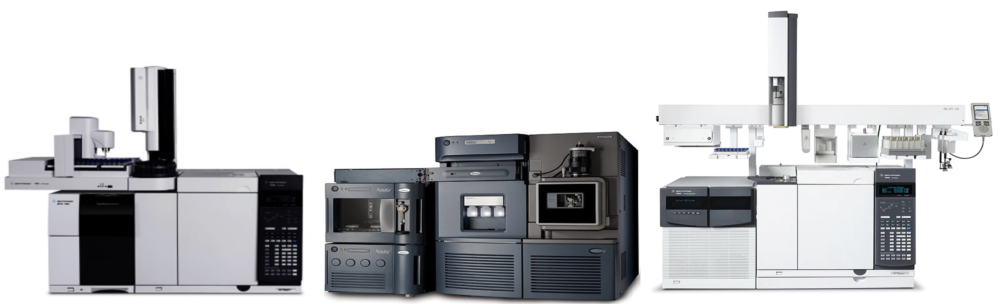
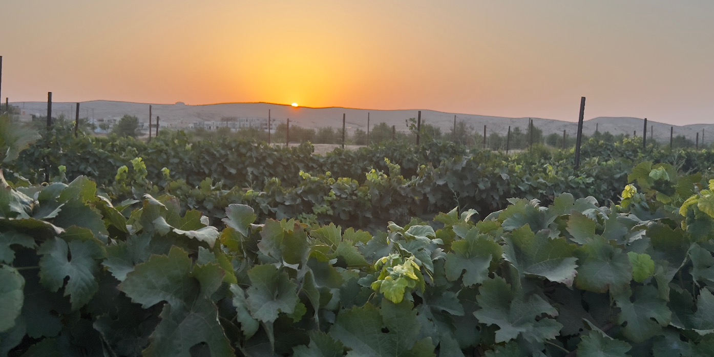
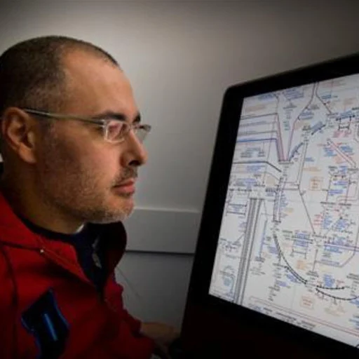
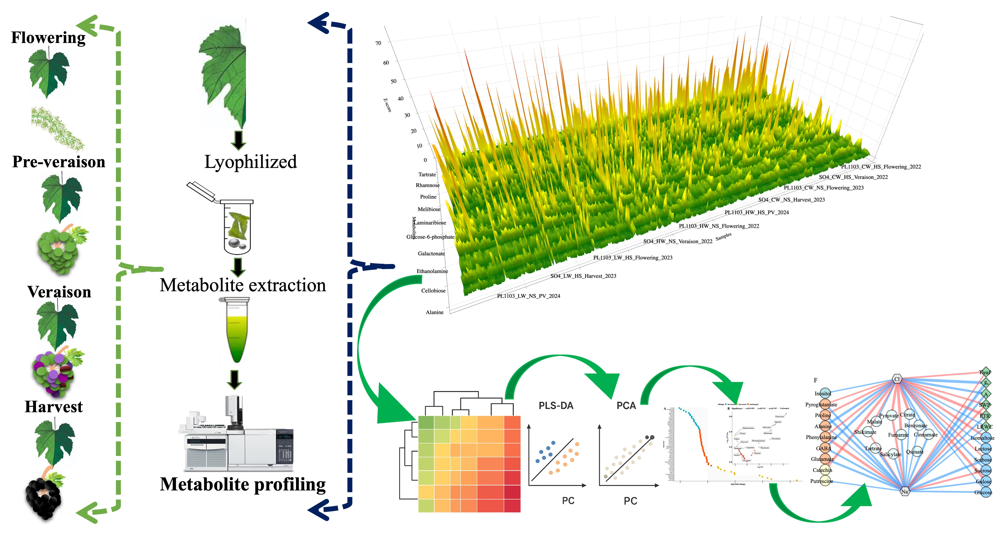
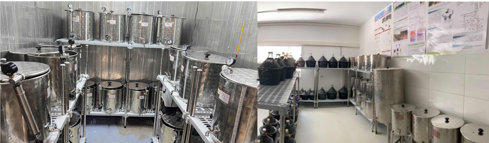

General Overview
Professor Aaron Fait's research at Ben-Gurion University focuses on the metabolic networks of plants, specifically how they adapt to environmental stress in arid and semi-arid regions. His lab bridges fundamental biochemistry with practical agricultural solutions to improve crop yield and nutritional value in a changing climate.
Research Fous
Plant Systems Biology & Metabolomics

Integrated Omics: Combining metabolomics, transcriptomics, and flux analysis to map the regulatory networks of plant metabolism under shifting environments. Abiotic Stress Mechanisms: Investigating how plants perceive and signal responses to extreme heat, drought, and salinity, focusing on metabolic acclimation and water-use efficiency (WUE). Resource Partitioning: Analyzing how environmental stress reconfigures the distribution of carbon and nitrogen between plant defense and productivity in desert ecosystems.
Desert Viticulture & Wine Science

Berry Metabolism: Studying the impact of climate change-specifically heat and water deficit on the biochemical composition and quality of wine grapes. Precision Viticulture: Exploring canopy management and regulated deficit irrigation (RDI) to optimize the interaction between genetics (root-scion) and the desert "terroir." Enological Potential: Bridging the gap between field physiology and wine quality, identifying metabolic markers that define the aromatic and phenolic profiles of desert-grown grapes.
Seed Biology & Crop Improvement

Developmental Networks: Deciphering the metabolic pathways governing seed maturation and germination, particularly in habitats with low or discontinuous rainfall. Natural Variation: Utilizing the genetic diversity of wild ancestors and introgression lines (e.g., tomato) to identify traits for enhanced nutritional value and yield. Life-Cycle Connectivity: Investigating how the metabolic status of the seed influences subsequent plant vigor and fruit traits under stressful conditions.
Research Facilities
Metabolomics & Bioinformatics Core

This central unit provides the high-throughput analytical and computational backbone for the lab's systems biology research. Mass Spectrometry Suite: Equipped with GC-MS and LC-MS/MS (including UHPLC-HRMS) for the precise identification and quantification of primary and secondary metabolites, from simple sugars to complex phenolics. Data Integration & Modeling: A specialized computational infrastructure for processing "big data," utilizing network analysis and multi-omics integration to map the regulatory nodes of plant metabolism under stress.
Controlled Growth & Field Research Stations

Located within the Jacob Blaustein Institutes for Desert Research (BIDR), these facilities allow for the precise manipulation of environmental variables. Environmental Chambers: Advanced climate-controlled rooms used to simulate heat waves, drought, and salinity to identify physiological "tipping points." Plant Physiology Suites: Equipped with tools for measuring gas exchange, stomatal conductance, and chlorophyll fluorescence to assess real-time plant stress responses.
Viticulture & Enology Unit

Dedicated to the study of grapevine resilience and wine quality in arid environments, this facility bridges field physiology with chemical analysis. Experimental Vineyards: Field sites located across the Negev Desert designed for studying canopy management, regulated deficit irrigation (RDI), and rootstock-scion interactions in extreme climates. Wine Quality Lab: A specialized space for the biochemical characterization of berries and wine, focusing on the aromatic and phenolic profiles (terroir markers) that define desert-grown vintages.